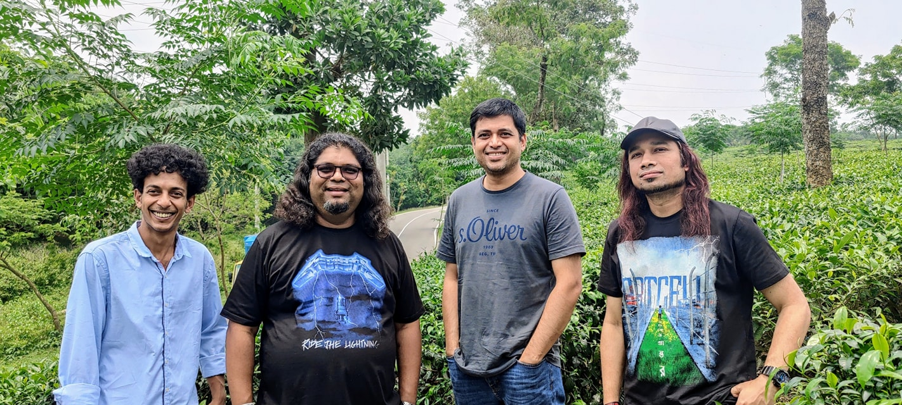
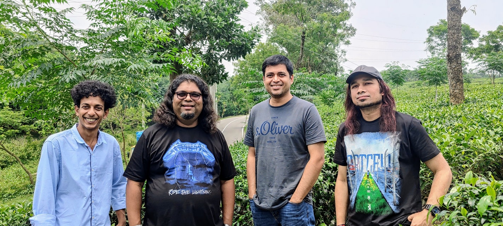

Artcell is a Bangladeshi progressive metal band formed in October 1999 by vocalist and riff guitarist George Lincoln D'Costa, lead guitarist Ershad Zaman, bassist Saef Al Nazi Cézanne and drummer Kazi Sazzadul Asheqeen Shaju.
 

first song the band composed was ‘অন্য সময় (Other Time)’. The song set the standard for all the songs yet to come along the way. The first song released by Artcell was ‘Odekha Shorgo’ which was recorded for the great Azam Khan for a mixed album he was planning on. But later it was released on a mixed album called 'Charpotro'. The song ‘Onnoshomoy’ was written by Rumman Ahmed and ‘Odekha Shorgo’ by Rupok. Both Rumman and Rupok were very close friends of the band members; and together they wrote most of the songs for Artcell.
During that time songwriter Rupok died from cerebral malaria on 2002.Rupok left when the band was working on their first solo album ‘অন্য সময় (Other Time)’, which was later released in CD's on May 5, 2002 and was dedicated in remembering of Rupok . And after four years of releasing ‘Onno Shomoy’; Artcell came up with their second album 'Oniket Prantor' on 2006 which led them widespread recognition. These are the only two albums the band has released since their establishment. Due to some personal reasons Shaju and Cezanne left Bangladesh 2011 and are settling at Sydney. But despite their absence, Lincoln and Ershad is carrying on with Artcell with guest members. They pronounced Kazi Faisal Ahmed as their permanent lead guitarist on 11 November 2018.[2] On July 26, 2018 after 12 years since their last album the band announced that they were going to release their third album very soon with the original lineup.
The name "Artcell" was decided upon because it was softer sounding than a typical heavy metal name. In Cézanne and Shaju's words:
Even though we were a heavy metal band when we started, we didn't want a heavy metal name. We wanted a softer or artistic touch to the heavy metal side. 'Cells where art is produced' – that was pretty much the basic idea behind the name 'Artcell'. Ershad came up with it and we all opted for it.
You can visit their Facebook and Instragam, it you like.
Here is their website.
This band is from Dhaka, the capital city of Bangladesh. All the members also live there
| Onno Shomoy | Oniket Prantor | Mixed Album |
|---|---|---|
| Onno Shomoy | Leen | Odhekha Shorgo |
| Bhul Jonmo | Smriti Sharok | Ostitter Dike Pododdhonir Shommohon |
| Poth Chola | Dhushor Shomoy | Opshori |
| Rupok: Ekti Gaan | Pathor Bagan | Dukkho Bilash |
| Mukhosh | Chayar Ninad | Shopner Chorus |
| Rahur Grash | Ghune Khawa Rodh | Bangladesh Shriti O Amra |
| Itihash | Shahid Shoroni | Utshober Utshahe |
| Kritrim Manush | Tomake | Ei Bidaye |
| Obosh Onubhutir Deya | Gontobbohin | Kandari Hushiar | >
| Olosh Shomoyer Pare | Oniket Prantor | > |
Head Office
Gulshan South Avenue
Gulshan-1, Dhaka 1212
© reserved by Hasnat Rokon